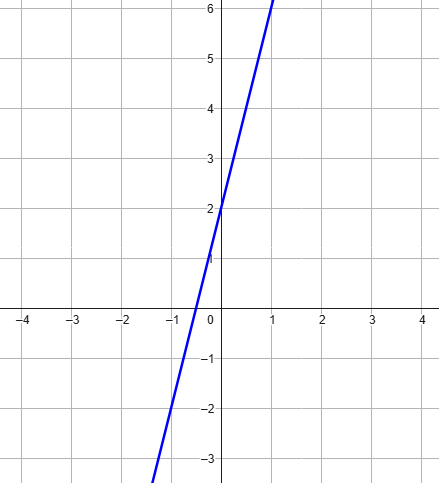
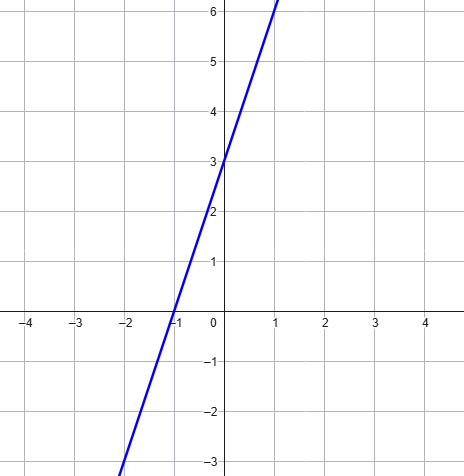

Siano \(\color{blue}{m}\) e \(\color{red}{q}\) due numeri qualsiasi.
Rappresentando tutti i punti del piano tali che
\[
y = \color{blue}{m\,}\color{black}{x} + \color{red}{q}
\]
otteniamo una retta.
-
Il numero \(\color{blue}{m}\) è detto coefficiente angolare.
Dal suo valore dipende l'inclinazione della retta.
-
Il numero \(\color{red}{q}\) è detto termine noto.
Il suo valore indica la "quota iniziale" della retta, ovvero
l'ordinata del punto
di intersezione tra la retta e l'asse \(y\).
Esempio
\[ y = \,\color{blue}{1} \color{black}{\,x \,} \color{red}{+\,\,0}\]
Stabilire se
\[
y = 4x - 2
\]
può essere l'equazione della retta rappresentata in figura

Stabilire se
\[
y = -3x + 3
\]
può essere l'equazione della retta rappresentata in figura
